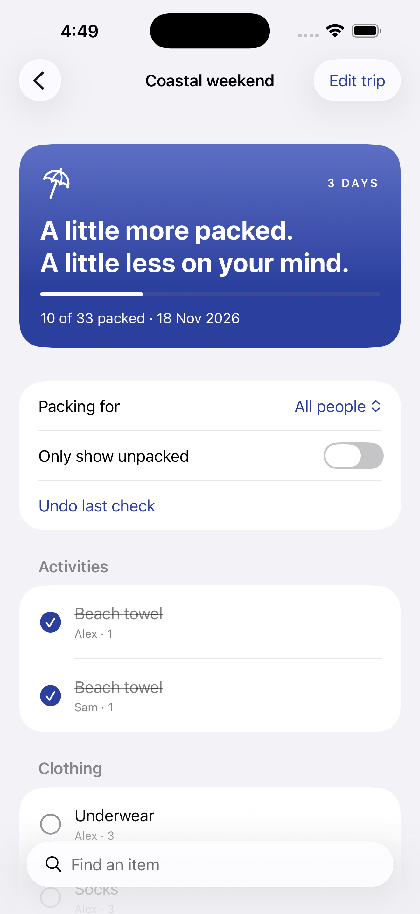

Pick your kind of trip.
Weekend, beach, business, camping, winter or family. Edit any template for your own plans.
For weekends, holidays & family trips
Get everyone’s essentials into one packing checklist. Start with a trip template, organise items by person and see what still needs to go in the bag.
Free: two saved trips + all six templates.
Optional one-time Plus. No subscription.


Less to remember before you leave
Weekend, beach, business, camping, winter or family. Edit any template for your own plans.
Add up to 12 travellers. Set items, categories and quantities, then filter by person.
Show unpacked items, check them off and undo the last check. Share a text checklist when you need a copy.
See your local price in the app before buying. Existing trips remain readable and editable without Plus.
Yes. Lists stay on your iPhone, ready when you need them. Purchases and restores need an internet connection. No account, advertising or analytics.
Lists for all travellers are organised on your iPhone. You can share a text copy, or a PDF with Plus. There is no live shared editing or cloud sync.
They are editable starting points. Adapt them to your destination, activities, weather and personal needs. Export important lists before uninstalling or changing phones.
Free resource
Get the shared essentials and each person’s items onto one printable checklist.
Open the weekend checklist →Restore Plus from About → Explore Plus → Restore Purchases, using the Apple Account used for your original purchase.
Help and purchase support · Privacy policy · Apple’s standard EULA